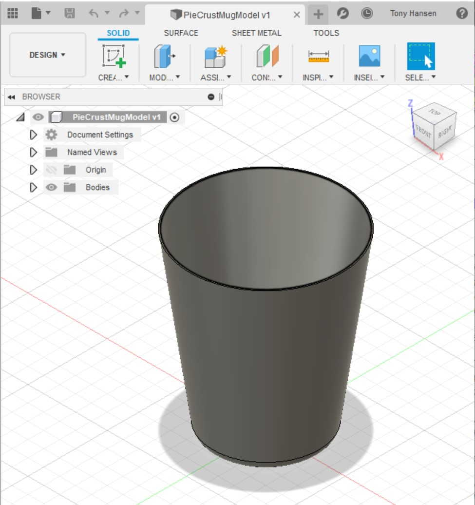
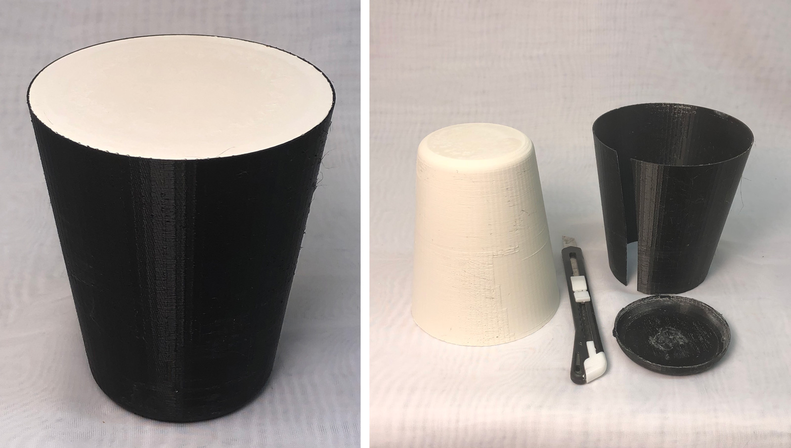
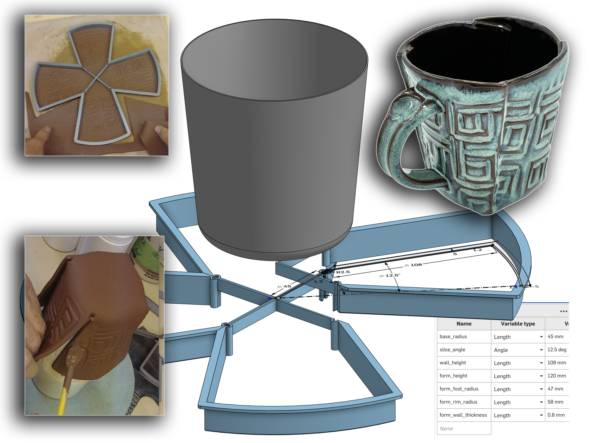
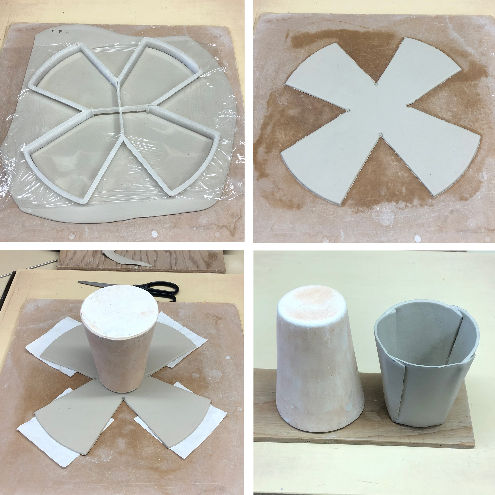

A cereal bowl jigger mold made using 3D printing
Beer Bottle Master Mold via 3D Printing
Better porosity for Brown Sugar Savers
Build a kiln monitoring device
Celebration Project
Coffee Mug Slip Casting Mold via 3D Printing
Comparing the Melt Fluidity of 16 Frits
Cookie Cutting clay with 3D printed cutters
Evaluating a clay's suitability for use in pottery
Make a mold for 4-gallon stackable calciners
Make Your Own Pyrometric Cones
Make your own sieve shaker to process ceramic slurries
Making a high quality ceramic tile
Making a Plaster Table
Making Bricks
Making our own kiln posts using a hand extruder
Medalta Ball Pitcher Slip Casting Mold via 3D Printing
Medalta Jug Master Mold Development
Mold Natches
Mother Nature's Porcelain - Plainsman 3B
Mug Handle Casting
Nursery plant pot mold via 3D printing
Plainsman 3D, Mother Nature's Porcelain/Stoneware
Project to Document a Shimpo Jiggering Attachment
Roll, Cut, Pull, Attach Handle-making Method
Slurry Mixing and Dewatering Your Own Clay Body
Testing a New Load of EP Kaolin
Using milk as a glaze
Pie-Crust Mug-Making Method
This is a method of making mugs that are delicate and functional but impossible-to-mistake for machine-made. Walls are even thickness so they dry well, even when very thin. The method is fast, I can make alot of these. It works with clays of lower plasticity. Every scrap of clay gets used. These are great when I only have a small amount of clay to test. And, most importantly for me, I can integrate 3D printing into the design, form making and cutting operations. While these are hand-made, they can have a consistency of size, shape and weight that make them fit into sets very well.
This is a technique, not to 3D print clay itself, but integrate modern 3D design and 3D-printing to making tools for an age-old processes of forming. Using an inexpensive, off-the-shelf 3D printer and Fusion 360. It is so exciting because of the infinite possibilities it opens. It means being able to make hand-made products at speed and consistency. There are many old-fashioned ways to make complex and consistent shapes, but only a few experts can do them and they are slow. But using this technology even an ordinary potter has the potential do extraordinary pieces.
Related Information
3D design for shell mold for cup model

This picture has its own page with more detail, click here to see it.
This was created by drawing the outside profile and a simple revolve operation in Fusion 360. And then shelling the shape (from the top) to 0.9mm thickness. I saved it as version 1 (v1). This was early on and I did not do this design parametrically (e.g. the height, top diameter and bottom diameter), I learned to do that later. If I had then each size could have been named height-top-bottom.
Printing the mug model and casting it in plaster

This picture has its own page with more detail, click here to see it.
I 3D printed it using PLA and poured it full of plaster. When the plaster set I peeled the printed shell off. The plaster part is the drape-mold around which the mugs can be formed (according to how the cookie cutter works I will change the size or either this to that). The surface roughness on the plaster was easy to remove using a metal scraper, then sand paper. I normally name 3D prints of this like this: TopDia-BottomDia-Height (making this one 94-66-110). But in this case, I want to maintain the same draft angle (8 degrees), so this is named 66-8-110 (BottomDia-Angle-Height). On first use with my 45-25-108 cutter it was evident that this form is too small. It needs 10mm more of height and 4mm more diameter (so I adjusted it to 70-8-120).
A giant cookie-cutter for slab built mugs
View and print it now using the Downloads page link
Available on the Downloads page

This picture has its own page with more detail, click here to see it.
3D print four of these and glue them together to make a large cookie cutter for producing slab-built mugs. 3D print the cup, fill it with plaster and remove the PLA using a heat gun. Roll out a thin slab of clay, press the cutter into it using a round wooden batt, make sure it is not sticking to the board and flip it over onto the plaster form. Handles can even be attached while it is on the form. If clay is plastic it can be used quite stiff. Experiment, adjust sizing and dimensions and reprint to fine-tune.
This has been drawn "parametrically" with OnShape. I only had to draw half of one of the quarters (I mirrored that, extruded and then did a circular pattern of 4). The downloads page (link above) has a free link to view this drawing at OnShape.com. To 3D print, right-click the part (from the list on the lower left, "Quarter 1" and "Cup"). Choose the Export option and select 3MF as the file type (it should go to your downloads folder). Open it with your slicer and print (turn the quarter over and make four). You can even export in formats that other CAD software can open. Better yet, import it into your OnShape account to see the design history and change multiple aspects of the geometry in the variables panel (the drawing will adjust automatically). Other dimensions (e.g. cut depth) can be edited manually. Parametric design is revolutionary and it is now accessible even to hobbyists; it fits my try-it, adjust-it and try-it-again way of working.
Forming the pie-crust mug

This picture has its own page with more detail, click here to see it.
As you can see, it is obvious why I call them "pie crust mugs"! The forming technique is: Roll out the slab. Stretch plastic wrap over it. Press the cookie-cutter down onto it (I press it down with a wooden bat to get even pressure). Remove the extra, place tissues under the wings (so they will fall freely) and invert the plaster form in the center. Flip the board and glue the overlaps using slip and pressure.
Black engobed M340 stoneware with GA6-B Alberta Slip glaze
Hand built. Cone 6 drop-and-hold PLC6DS firing. The engobe is the L3954B base recipe with added Mason 6600 black stain, it was applied at the leather hard stage inside and part way down the outside. The GA6-B glaze enhances the black under it. By Tony Hansen.
Incredible Mother Nature’s porcelain

This picture has its own page with more detail, click here to see it.
This is made from 100% of a natural clay (3B) from the Whitemud formation in Ravenscrag, Saskatchewan. To make this body, which I call MNP, I slake and slurry up the raw clay lumps, sieve it to 200 mesh and then dewater on a plaster table. I rolled the plastic clay into a thin layer, cut it into a cross-shape using a 3D printed cookie-cutter, drape-molded it over a plaster form and then slip-joined the seams. It fires very dense and strong (to zero porosity like glass!). It holds together well and joins well with its own slip. Although not super plastic, it is smooth and fine-grained like a commercial porcelain body. I add 1-2% bentonite to make it more plastic when needed. It can be rolled extremely thin and yet does not warp in the firing! This mug has a weight-to-volume ratio of 2.08 (the weight of water it will hold compared to its own weight).
Inbound Photo Links
|
Deep blue Mother Nature's porcelain with rutile glaze |
 PayPal | No tracking, No ads, No paywall, No transient content! Just organized, concise information constantly updated and improved. Was this helpful? Consider supporting me. |
| By Tony Hansen Follow me on        |  |
Got a Question?
Buy me a coffee and we can talk 

https://digitalfire.com, All Rights Reserved
Privacy Policy